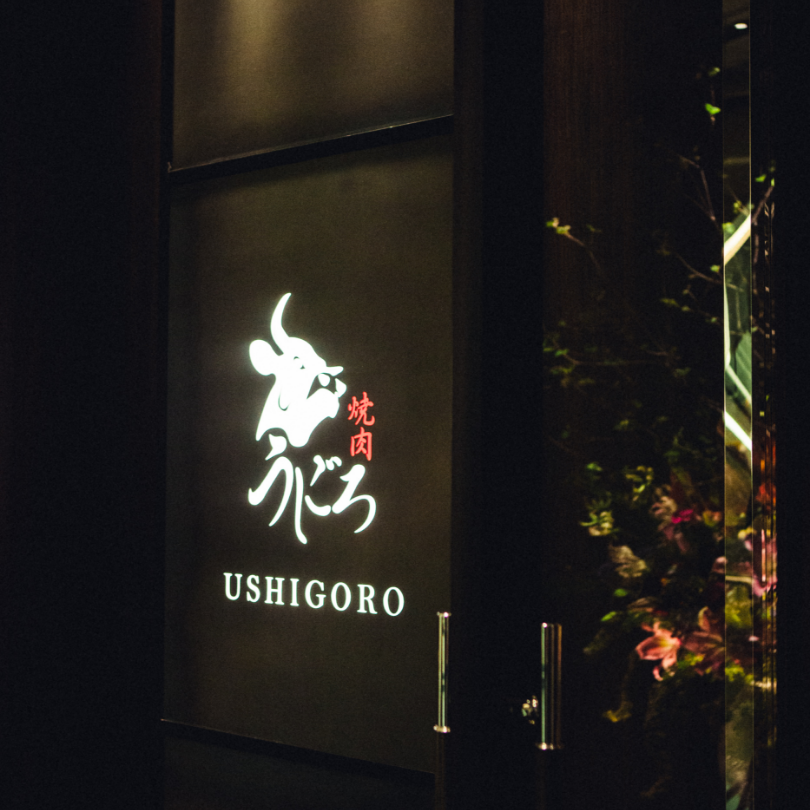
2022.05.11
既存にはない新しいタイプの焼肉店を標榜する『うしごろ』。コンセプトごとに「うしごろ」「USHIGORO S.」「うしごろ上」と、いくつかの店舗を展開しているのも特徴です。中でも今回はLG Stylerが導入されている、銀座にある2つの『うしごろ』にお邪魔しました。
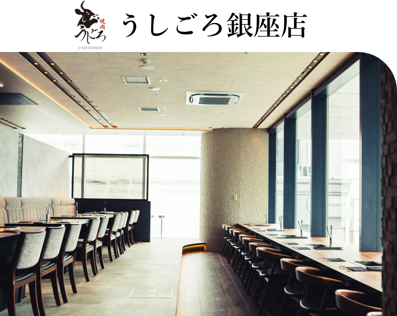
２面ガラス張りで天井が高く、日差しがたっぷりと注ぎ込まれる銀座店は、2021年10月にリニューアルを果たしたばかり。銀座という街にふさわしい格調の高さを備えながらも、肩肘張らずに楽しむことができるリラックスした空間が特徴です。
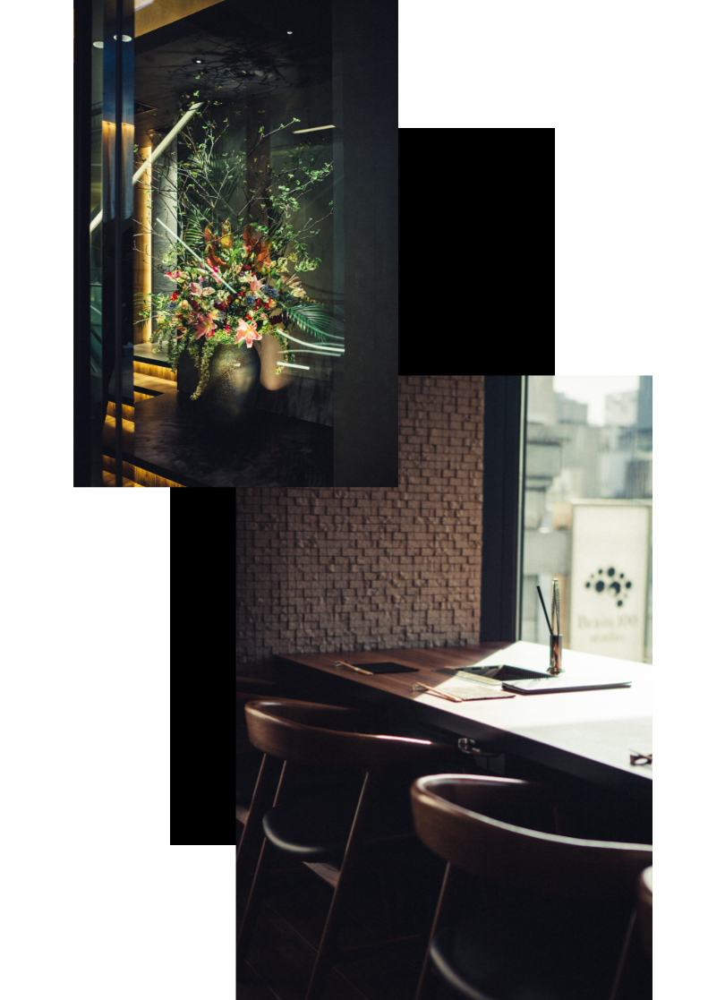
多くの焼肉店が自分でお肉を焼くスタイルをとっている中、「うしごろ」は食材に合わせて焼き師が最高の焼き具合で提供するのがポイント。もちろん希望により自分で焼くことも可能で、カスタマーの希望に沿ったサービスを提供してくれます。それはまるで上質なイタリアンレストランやフレンチレストランのよう。それに似た体験を焼肉店で体験できるのです。
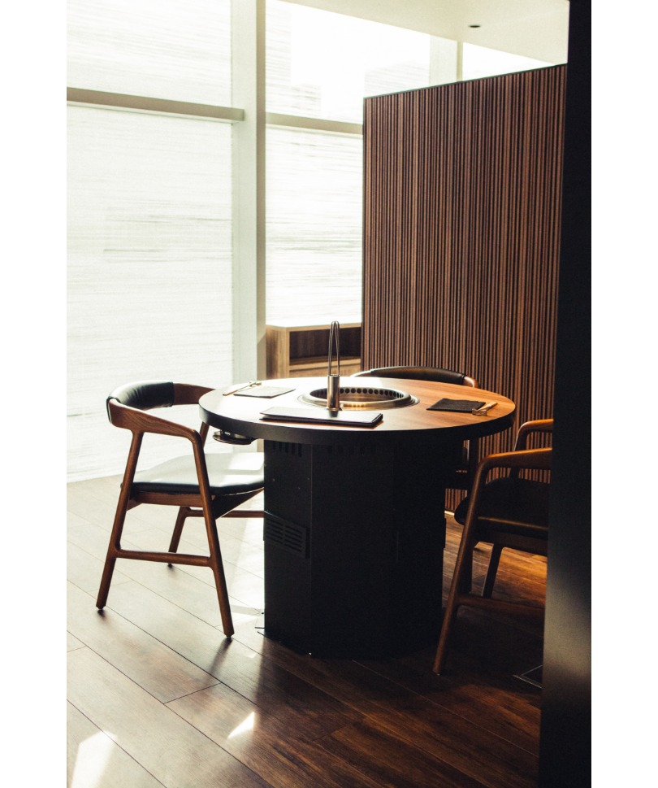
店内にはオープンスペースの席に加え、写真のような半個室も用意。完全個室も５部屋用意されている。
「お肉を存分に楽しんでいただくのはもちろん、ご来店されてから帰られるまでの全ての体験がサービスだと考えています」と話してくれたのは、同店でソムリエとしても活躍される野口鉄平さん。“行き届いたサービス”がうしごろの真骨頂です。
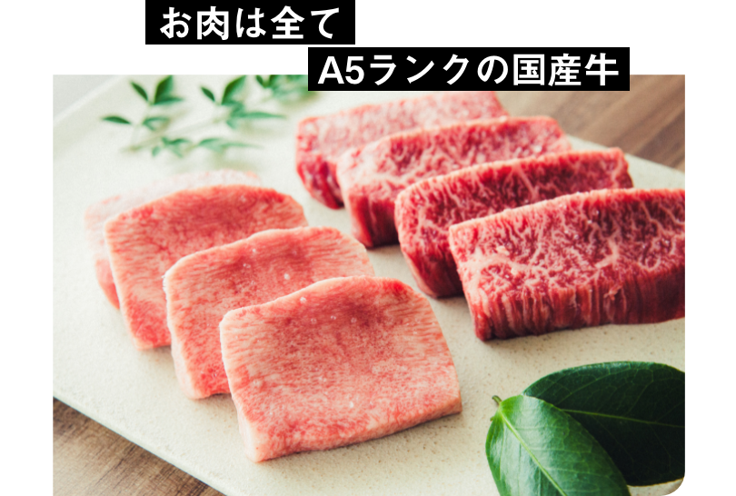
右上は〈国産黒毛和牛の厳選厚切りハラミ〉２貫3500円。国産のハラミは市場にそう多くは出回らない。溢れる肉汁を楽しんでほしいため、最初は歯で噛み切って食べてほしいそう。左下は〈究極の黒タン〉２貫で3200円。舌の上部と下部を切り分けたものを提供。上部はサクサクとした食感で、下部は弾力のある柔らかな食感が楽しめる。
『うしごろ』が取り扱うお肉は、全てがA5ランクの国産牛。これは仕入れようと思って仕入れられるものではなく、うしごろのネットワークがあってこそ仕入れられるもの。信頼できる業者を厳選し、国産に徹底的にこだわり、最高のお肉を提供する。「それはうしごろの使命」とさえ、野口さんは言います。
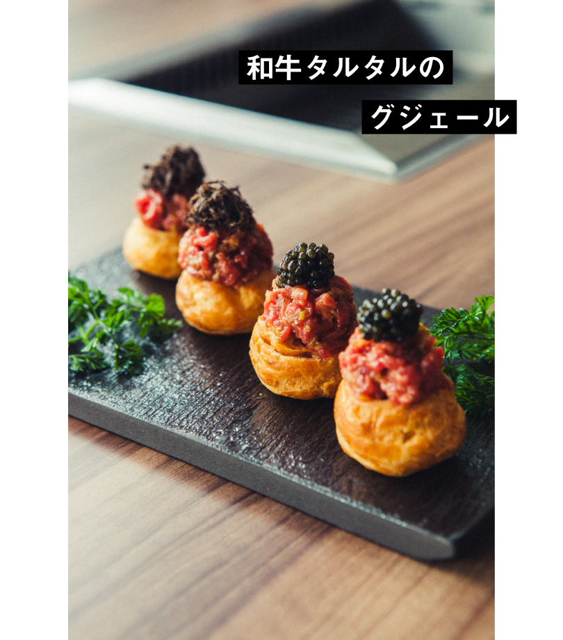
〈和牛タルタルのグジェール〉２貫1000円。グジェールとはチーズを練り込んだシュー生地のこと。タルタルソースであえた生肉にキャビアを添えて。
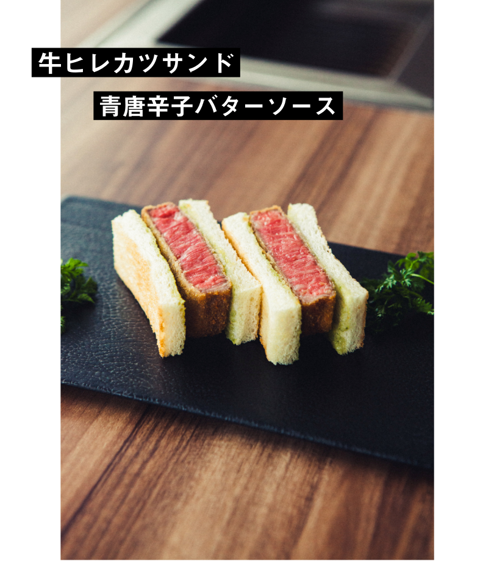
〈牛ヒレカツサンド青唐辛子バターソース〉3800円。青唐辛子のピリッとした刺激が絶妙。
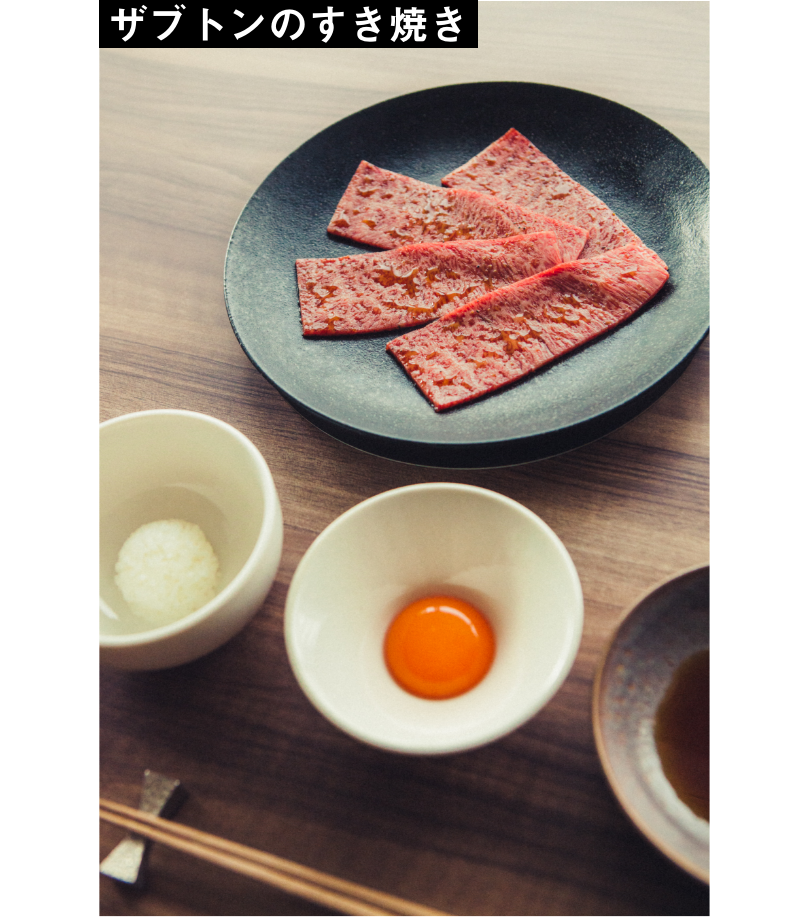
〈ザブトンのすき焼き〉2800円。軽く焼き上げた後に徳島のたまご〈あわそだち〉に一度くぐらせ、新潟魚沼産の一口コシヒカリに巻いて食べる。まさに至福のひと口。
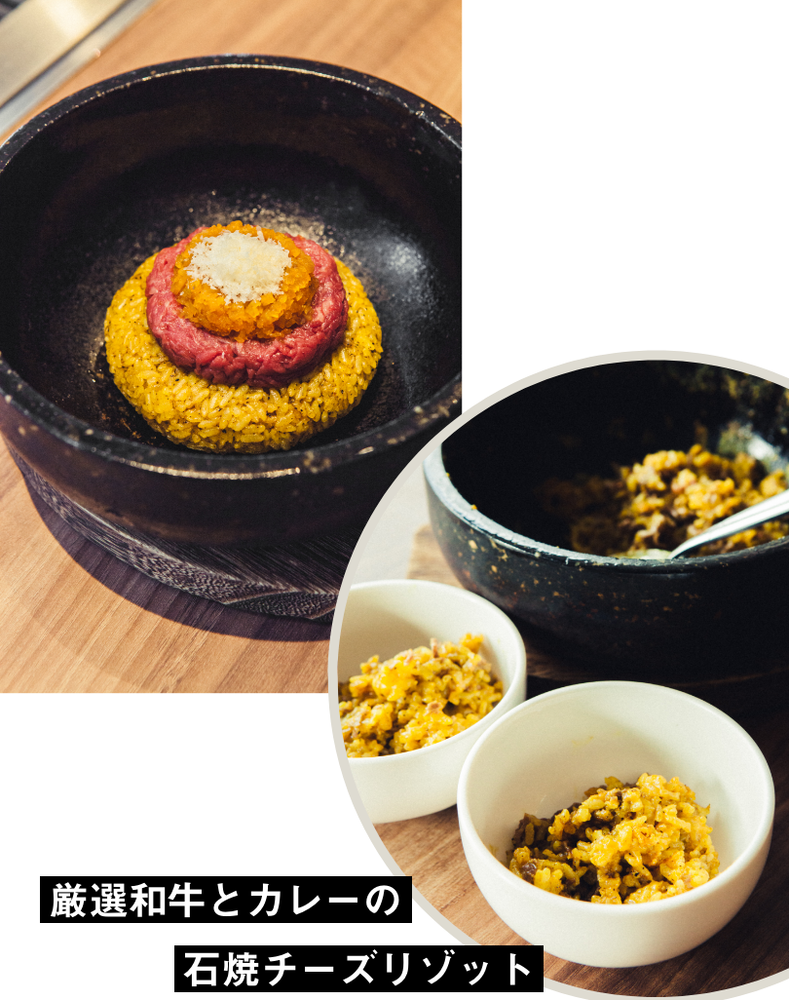
〈厳選和牛とカレーの石焼チーズリゾット〉1600円。左上の写真の状態からたっぷりとチーズをかけ、よく混ぜて石焼にして完成。
「イタリアンでもなく、フレンチでもなく、さらに言えば焼き肉でもない。『うしごろ』というクオリティをお客様にお楽しみいただければと思っています」
あらゆるアプローチで
お客様に満足していただけるように
お客様に満足していただけるように
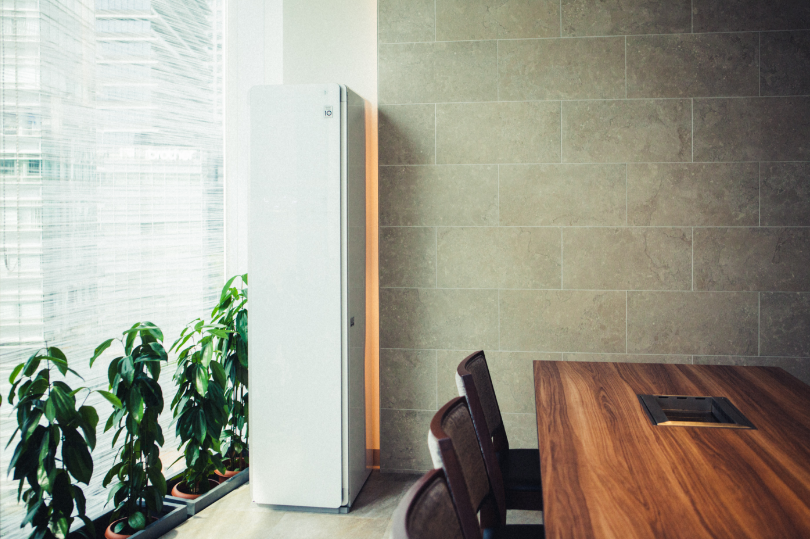
そんなうしごろ銀座では、この春からLG Stylerを導入しています。
「お客様により感動していただくための一つの選択として導入しました。銀座という場所柄、ここにはお召し物に細やかな気配りをされるお客様も多くいらっしゃいます。焼き肉と匂いは切っても切り離せないものでしたが、そのソリューションとしてLG Stylerを導入しています」
「お客様により感動していただくための一つの選択として導入しました。銀座という場所柄、ここにはお召し物に細やかな気配りをされるお客様も多くいらっしゃいます。焼き肉と匂いは切っても切り離せないものでしたが、そのソリューションとしてLG Stylerを導入しています」
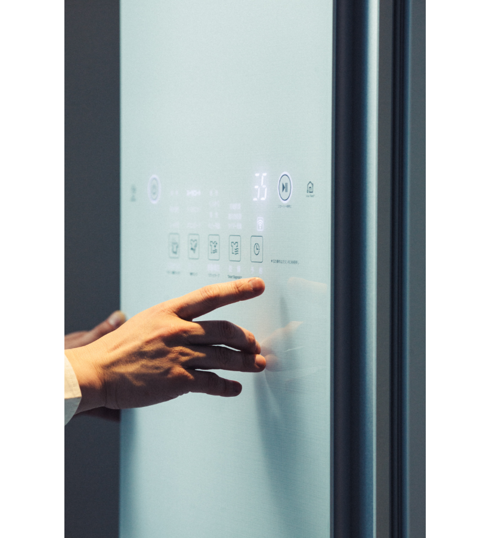
「銀座店では個室のVIPルームに設置。このお部屋をご利用いただいたお客様にお薦めをしていますが、想像以上に評判がいいです。焼肉店に来て匂いがつくどころか、いらっしゃった時よりもクきれいになって戻ってくるのですから。帰り際にとても喜ばれます。本当に導入して良かったと思っています」
USHIGORO S. GINZAでは
クロークに設置
クロークに設置
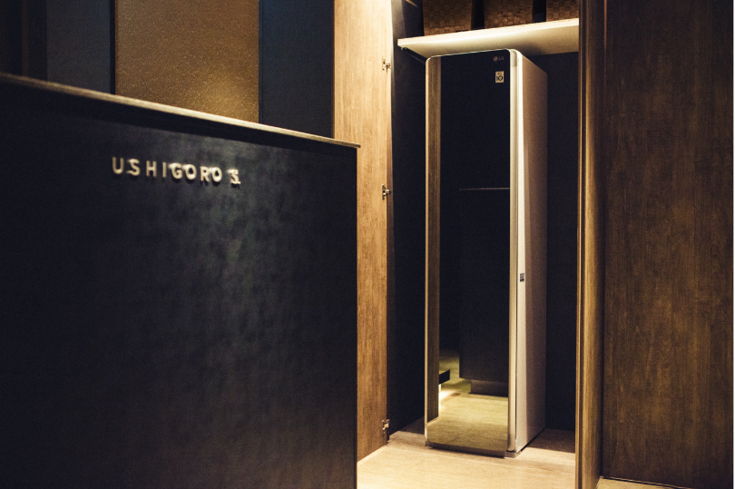
「同じく銀座エリアにあるUSHIGORO S.にもLG Stylerは置いてあります。個室のみのUSHIGORO S.ではお部屋ではなくクロークに設置してあるので、希望するお客様にご案内が可能。さまざまなお客様にお試しいただいています」
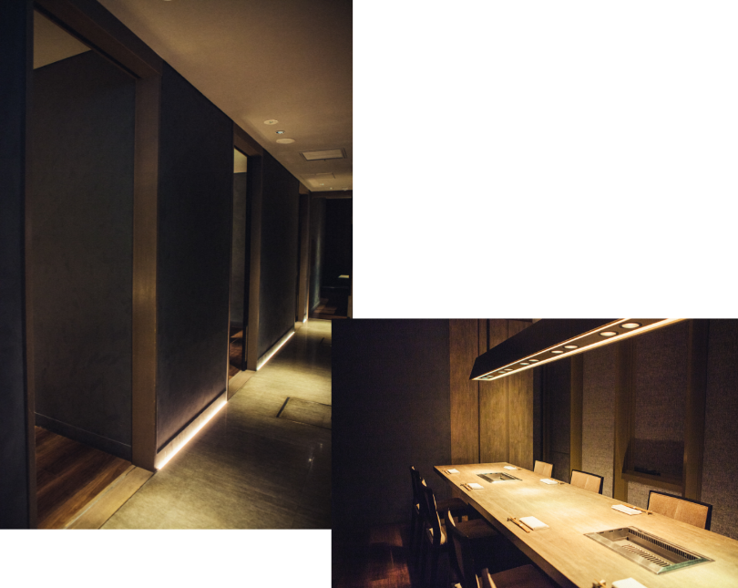
USHIGORO S. GINZAは個室のみ11部屋。全ての部屋に専属の焼き師がつく。
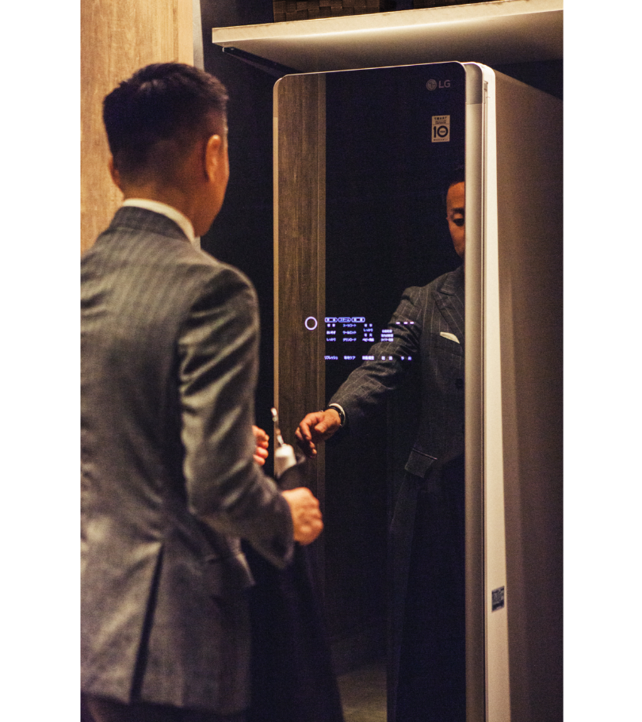
「ランチとディナーの間のアイドルタイムにはスタッフも使用させていただいています。そうすることで私たちもまたフレッシュな気持ちでお客様をお迎えすることができますし、お客様にも安心していただけますから。より深いサービスにつなげられていると実感しています」